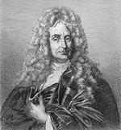
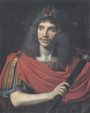

Co víš o Napoleonovì Vítìzném oblouku v Paøíi?

Ingres: Turecká lázeò

|
KLASICISMUS
Klasicistní sloh vznikl ve Francii v polovinì 17. století (za vlády Ludvíka XIII.). Vyznaèuje se dùslednım návratem k antice a podrobnım rozdìlením umìní na vysoké a nízké ánry, formy i námìty. Upøednostòuje urozené hrdiny, vznešené myšlenky, ánrovou èistotu (zákaz míšení ánrù a forem) a antické námìty. Za vysokı ánr je povaována tragédie, óda, epos, sonet a poezie vùbec, k nízkım patøí komedie, román, satira, bajka èi píseò a próza. V dramatu je ideálem zákon trojí jednoty.
Mezi klasicistní stavby mùeme zaøadit zámeckı komplex Versailles [versaj], kterı zaèal budovat „král Slunce“ Ludvík XIV., a paøískı Pantheon. Klasicismus se prosadil i ve Spojenıch státech americkıch – washingtonskı Kapitol.
Prùkopníkem klasicismu v malíøství byl Francouz Nicolas Poussin [pusen] (1594-1665) a krajináø Claude Lorrain [loren] (1600-1682). Vrcholná díla vytvoøili Jean Auguste Dominique Ingres [éngr] (1780-1867), Jaques Louis David (1748-1825), jakobín (Maratova smrt) a oficiální portrétista Napoleona, a nìmeckı malíø a teoretik Anton Raphael Mengs (1728-1779).
Mezi sochaøi vynikal Ital Antonio Canova (1757-1822).

Která instituce sídlí ve washingtonském Kapitolu?
|
David: Napoleon Bonaparte

David: Maratova smrt

Poussin: Parnas
|
Nicolas Boileau-Despréaux (1636-1711)
Francouzskı básník Nicolas Boileau-Despréaux [nikola boalo depreo] byl královskım dìjepiscem a rozhodèím ve vìcech umìní na dvoøe Ludvíka XIV. Pøátelil se s Molièrem, Racinem a La Fontainem. Napsal programovou skladbu Umìní básnické a sbírky Satiry a Listy.
|
Nicolas Boileau: Umìní básnické
Ve své básni Umìní básnické (L’art poetique) popsal Boileau hlavní zásady klasicistní poetiky. Toto dílo bylo pøijato s obrovskım nadšením a stalo se základem celé klasicistní literatury. Boileau vidìl ideál v umírnìnosti a vyrovnanosti vırazu, pravdìpodobnosti dìje a v síle básnického génia. Vybízí umìlce, aby napodobovali antické formy, ale sám je popisuje velmi mlhavì: idyla je „prostá, naivní, jemná, lahodící uchu” bez „hrubıch slov venkovanù“, elegie má „trochu vyšší tón a dlouhı èernı šat“ a óda opìvuje “krásnı chaos”. Jasnìjší je v poadavku trojí jednoty:
Ale my, kterım um pravidla stále pìjì
chceme, a dùvtipnì snují se všechny dìje
a a jen na jednom místì a v jednom dni
jeden èin divadlo napìtím naplní
|
Umìní básnické navazuje na Horatiùv List Pisonovcùm z jeho sbírky Epištoly a Aristotelovu Poetiku.
|

Mengs: Marie Luisa
|
Pierre Corneille (1606-1684)
Dramatik Pierre Corneille [pjér kornej] bıvá nìkdy øazen k baroku. Pøijal èlenství ve Francouzské akademii, ale pozdìji se ocitl v nemilosti. Je autorem her Cid, Medea, Andromeda, Horatius nebo Lháø.

David: Pøísaha Horatiù
Co je obsahem Cidova monologu?
Srovnej ho se známım monologem Hamleta.
Souhlasíš se Cidovımi názory? Proè?
|
Pierre Corneille: Cid
Drama Cid [sid] vypráví o vztahu milencù Rodriga a Chimeny, pro které je èest dùleitìjší ne láska. Dìj dramatu Cid se odehrává ve Španìlsku. Rodrigo-Cid v souboji zabije otce milované Chimeny. Urazil toti jeho otce a èest rodiny je mu nade vše. Chimena ádá krále, aby Rodriga potrestal, pøestoe ho miluje. Rodrigo se mezitím vyznamená v boji proti Maurùm, nakloní si tak pøízeò krále a získá titul Cid (pán). V souboji o Chimeninu ruku porazí svého soka a král nakonec svolí, aby se po roce smutku vzali.
Námìt hry vychází ze španìlského støedovìkého cyklu o Cidovi. Navíc Corneille v této tragikomedii porušil všechny zákony klasicistního dramatu, co vedlo kritiky k naprostému odsouzení hry i jejího autora.
|
Zákon trojí jednoty v dramatu
Ideální klasicistní drama splòuje zákon trojí jednoty – místa (dìj se odehrává na jednom místì), èasu (bìhem jednoho dne) a dìje (zachování èistoty ánru komedie nebo tragédie, nesmìly se tedy psát tragikomedie).
Dobové dekorace k Andromedì
|
Jean Racine (1639-1699)

Jean Racine [an rasin] se hlásil k jansenismu. Byl nejuznávanìjším francouzskım dramatikem, ale konec ivota strávil v nemilosti. Proslul jako autor tragédií na antické námìty (Faidra, Ifigenie v Aulidì, Andromacha...)
|
Jean Racine: Faidra
Racinova tragédie Faidra vypráví antickı pøíbìh o árlivosti. ena krále Thésea Faidra se zamiluje do svého nevlastního syna Hippolyta. Jeho srdce ale patøí jiné, a proto Faidru odmítne. Nevlastní matka se mu chce pomstít. Øekne manelovi, e o ni jeho syn usiluje, Théseus jí uvìøí a svolává na syna pomstu bohù. Hippolytos umírá a zdrcená Faidra spáchá sebevradu.
Stejnou látku zpracoval u øeckı dramatik Euripides (Hyppolitos) a Øíman Seneca (Phaedra).
|

Poussin: Théseus
Lorrain: Námoøní pøístav
Charakterizuj obì postavy.
Co je incest?
|
Molière (1622-1673)
Jean-Baptiste Pocquelin [an batist poklen], známìjší pod jménem Molière [moljér] vystudoval práva, ale ivil se jako herec, dramatik a reisér. Vlastnil koèovné divadlo, se kterım putoval po Francii. Pozdìji se stal øeditelem královského divadla v Paøíi, se kterım hrál pøed samotnım králem Ludvíkem XIV. Mìl neustále problémy s cenzurou a nakonec se ocitl v nemilosti. Bìhem pøedstavení komedie Zdravı nemocnı Molière omdlel a brzy na to se odebral na vìènost (bez lékaøské pomoci i posledního pomazání). Molière je autorem 33 komedií: Smìšné preciózky, Sganarel, Škola pro mue, Škola pro eny, Tartuffe, Don Juan, Misantrop, Mìšák šlechticem, Amfitryon, Láska lékaøem, Lékaøem proti své vùli, Skapinova šibalství, Lakomec nebo Zdravı nemocnı. V jeho hrách vystupují hlavnì obyèejní lidé – kupci, mìšané a sluhové.
O èem jsou komedie Zdravı nemocnı, Don Juan a Misantrop?
Koho oznaèujeme vırazem donchuán?
V èem pøipomíná hra Lakomec komedii dell’arte?

Dobová ilustrace k Molièrovì Škole pro mue
Co si myslíš o Tartuffovi?
|
Molière: Lakomec
Lakomı lichváø Harpagon chce oenit syna Kleanta s bohatou vdovou a vdát dceru Elišku za starého boháèe Anselma. Eliška ovšem miluje Valéra, kterı z lásky k ní slouí u Harpagona zcela zadarmo, a Kleantes miluje Marianu, o kterou se zároveò uchází i jeho otec. Naštìstí Kleantùv sluha Èipera vymyslí plán, jak Harpagona pøelstít. Ukradne mu pokladnici, ve které je tøicet tisíc dukátù. Aby je Harpagon dostal zpìt, musí se Mariany vzdát. Nakonec svolí i k sòatku svıch dìtí, protoe se ukáe, e Mariana a Valér jsou dìti boháèe Anselma...
Podobnı námìt zpracoval øímskı dramatik Plautus ve své Komedii o hrnci.

Molièrovì spoleènosti konkurovala Italská komedie.
Molière: Tartuffe aneb Podvodník
Tartuffe [tartif] je pokrytec, kterı dává na odiv svou èestnost a zbonost. Vetøe se k bohatému mìšanu Orgonovi, zneuije jeho dùvìry a zavede v jeho domì asketická pravidla, která sám nedodruje. Orgon svìøí svùj majetek i osud do Tartuffovıch rukou, ale nakonec prohlédne jeho intriky. Schová se toti pod stùl a slyší, jak Tartuffe svádí jeho manelku Elmíru. Za Orgona se postaví i král, protoe se ukáe, e Tartuffe je špiclem Svaté kabaly.
Pøedstavení Tartuffa bylo souèástí jedenáctidenních slavností Rozkoše kouzelného ostrova, které pro dvùr Ludvíka XIV. inscenoval Molière na zámku Versailles.
|

Pierre Mignard: Molière

Molière v kostımu Sganarela

Dobová ilustrace k Tartuffovi
Rozkoše kouzelného ostrova
|
Carlo Goldoni (1707-1793)

Italskı dramatik Goldoni psal struèné scénáøe pro komedie dell’arte i klasické dramatické texty. Z 218 her se dodnes hrají komedie Sluha dvou pánù, Chytrá vdova, Mirandolina, Zamilovaní nebo Poprask na lagunì. Cenné jsou jeho Pamìti.
|
Carlo Goldoni: Sluha dvou pánù
Hlavním iniciátorem zápletek Goldoniho komedie Sluha dvou pánù je vìènì hladovı popleta Truffaldino, kterı se rozhodl pracovat zároveò pro dva pány (Beatrici a Florinda). Hra je zaloena na øadì zámìn, omylù a pøevlekù. Beatrice hledá milovaného Florinda. Pøestrojí se za svého mrtvého bratra Fedriga, ale kdy pøijde na zásnuby Silvia s Clarice, pùvodní Fedrigovou snoubenkou, zpùsobí znaènı rozruch. Po mnoha komickıch peripetiích se vše vysvìtlí a milenecké páry se šastnì políbí – Clarice se Silviem, Beatrice s Florindem a Truffaldino s Claricinou slukou.
|
Ingres: Sleèna Rivierová
Na èem stojí komiènost této ukázky?
Sehraje ukázky z klasicistních dramat v této kapitole.
|
Bajky

La Fontainovy bajky ilustroval francouzskı malíø Jean-Baptiste Oudry [udry] (1686-1755).
|
Bajky
Bajky byly velmi oblíbené ve starovìku, støedovìku i renesanci. Tomuto ánru se vìnovala øada vıznamnıch spisovatelù, pøedevším francouzskı básník Jean de La Fontaine, Nìmec Gotthold Ephraim Lessing a Rus Ivan Andrejeviè Krylov. Vìtšinu námìtù k jejich bajkám nacházíme ji u Ezopa.
Napiš vlastní bajku. Nezapomeò na závìreèné mravní ponauèení.
|
Francouzskı básník Jean de La Fontaine [an de lafonten] (1621-1695) byl èlenem Francouzské akademie. Kromì Bajek je autorem veršovanıch Elegií a Povídek, románu Láska Psyché a Kupida a operních libret.
Nìmeckı spisovatel Gotthold Ephraim Lessing (1729-1781) pracoval jako knihovník. Psal divadelní hry (Mína z Barnhelmu neboli Vojácké štìstí, Emilia Gallotti, Moudrı Nathan), Bajky a Epigramy. Ve svıch teoretickıch pojednáních se hlásil k osvícenství.
Ruskı básník Ivan Andrejeviè Krylov (1769-1844) pracoval jako úøedník, ale kvùli svım satirickım básním se ocitl pod policejním dohledem. Po vydání Bajek získal slávu, peníze i uznání cara.
|
Internetové stránky
Boileau, informace
Boileau, díla
Molière, informace
Molière, informace
La Fontaine, informace
La Fontaine, informace
La Fontaine, informace
Goldoni, hry
Vysvìtli vıznam slov klasifikace, klasickı, klasicistní, klasika, klasik a klasa.
|
Doporuèená èetba
Boileau, Nicolas: Básnické umenie, pøel. J.Švanter, Tatran, Bratislava 1990
Brett, Vladimír: Molière, Orbis, Praha 1967
Bukáèek, Josef: Carlo Goldoni, Osobnost a doba, NÈSAV, Praha 1957
Bulgakov, Michail: ivot pana Molièra, pøel. A.Morávková, Lidové nakladatelství, Praha 1979
Corneille, P.: Cid, pøel. S.Kadlec, Praha 1956
Kopal, J.: Literární teorie Boileauova, Praha 1923
Krylov, Ivan Andrejeviè: Bajky, pøel. H.Vrbová, Lidové nakladatelství, Praha 1973
La Fontaine, Jean de: Bajky, Odeon, Praha 1983
Lessing, Gotthold Ephraim: Hry, básnì, bajky, epigramy, pøel. E.Petiška
Molière: Hry (4 svazky)
Molière: Lakomec, Misantrop, Tartuffe, Mladá fronta, Praha 1966
Molière: Versailleská improvizace, Praha 1928
Goldoni, Carlo: Komedie (3 svazky), SNKLHU
Racine, J.: Britannicus, Ifigenie, Atalia, Praha 1990
Racine, J.: Faidra, pøel. G.Francl, Orbis, Praha 1960
|
Pøiprav si referát o nìkteré z uvedenıch knih nebo internetovıch stránek.
Odvoï základní pravidla pro vıslovnost francouzskıch jmen.

Canova: Amor a Psyché
|
|